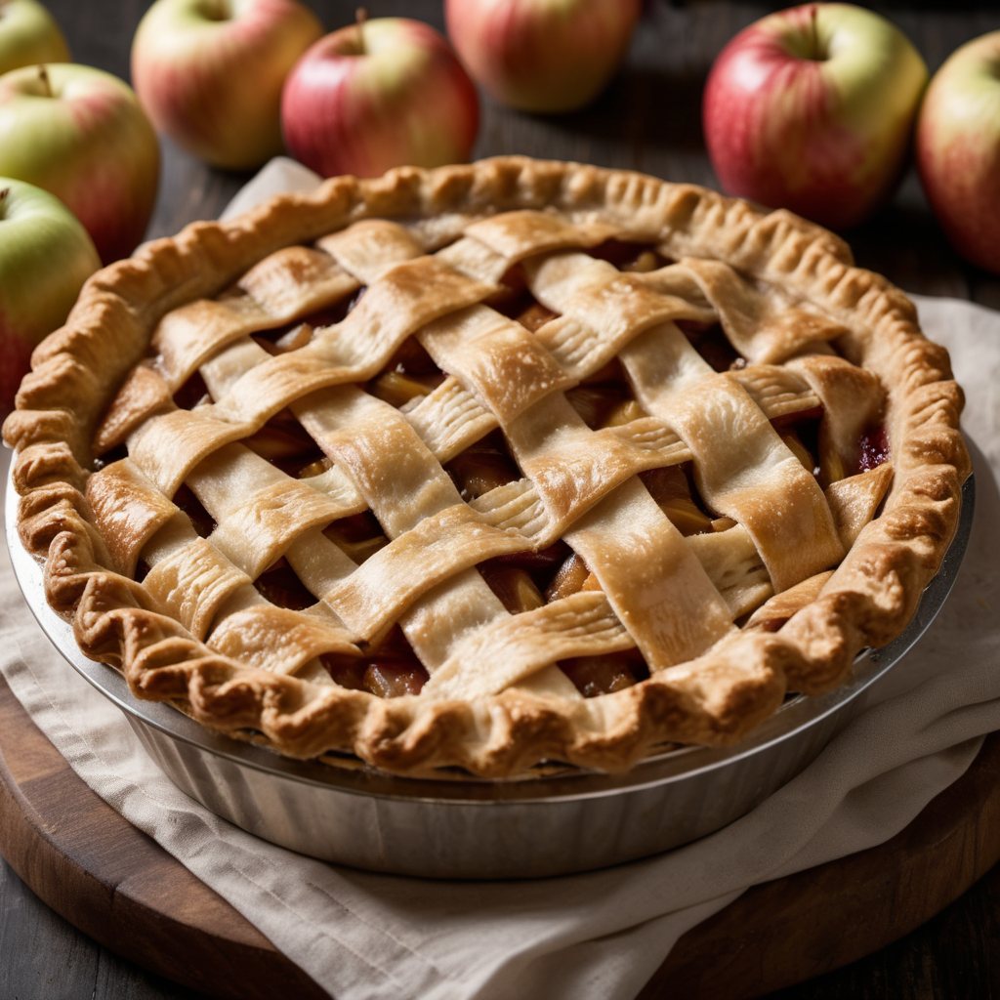

Hozzávalók:
- 6 alma, hámozva, magozva és vékonyan szeletelve
- 200 g cukor
- 2 ek finomliszt
- 1 tk őrölt fahéj
- 1/4 tk őrölt szerecsendió
- 1 csipet só
- Friss citromlé (1-2 evőkanál)
- 200 g puffasztott vagy hámozott tészta (leveles tészta)
- 1 db felvert (a kenéshez)
- Porcukor a szóráshoz (opcionális)
- Vaníliafagylalt vagy tejszín a tálaláshoz (opcionális)
Elkészítés:
- Melegítsd elő a sütőt 180°C-ra, és készíts elő egy 22-24 cm átmérőjű piteformát, kivajazva vagy kibélelve.
- Egy nagy tálban keverd össze az almaszeleteket a cukorral, liszttel, fahéjjal, szerecsendióval, sóval és citromlével. Hagyd állni, amíg előkészíted a tésztát.
- Nyújtsd ki a puffasztott tésztát egy lisztezett felületen, és helyezd a piteformába. Vágd le a felesleget.
- Töltse meg az almatöltelékkel a tésztát a formában.
- Helyezd a második darab tésztát a töltelék tetejére, és vágd le a felesleget. Választhatod a tésztadarabok kereszt alakú vagy rácsos elrendezését.
- Kenj a tetejére felvert tojást, hogy szép aranybarna legyen a sütés során.
- Süsd a pitét előmelegített sütőben kb. 40-45 percig, vagy amíg a tészta szép aranybarna és az alma megpuhul.
- Miután elkészült, hagyd a pitét kicsit hűlni, majd tálald porcukorral megszórva, és választhatod mellé a vaníliafagylaltot vagy tejszínt is.